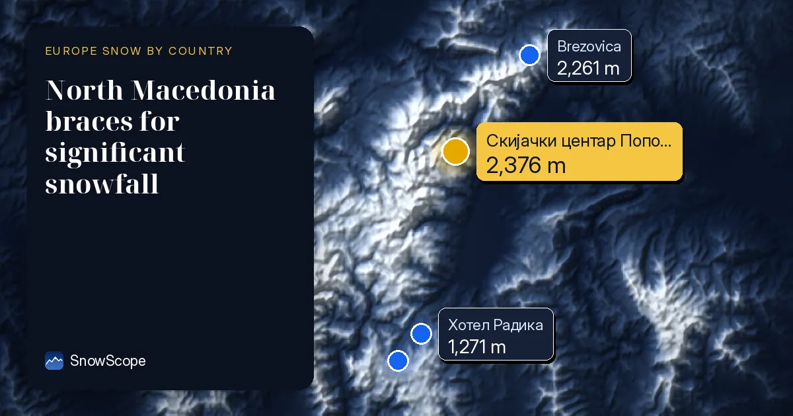

North Macedonia braces for significant snowfall: 47 cm possible over seven days
North Macedonia is about to experience its most substantial snowfall since early autumn, with up to 47 centimetres of snow water equivalent accumulating over the next seven days. Tomorrow, 23 November, will bring the heaviest precipitation, delivering approximately 17 centimetres to the highest peaks.
See the live snow forecast for Скијачки центар Попова шапка in the SnowScope appSnow depth, powder alerts and the 3D map, free.
A week of accumulation ahead
The forecast shows a dramatic shift from recent weeks. Over the next three days, the mountains of North Macedonia will receive up to 21 centimetres, concentrated principally in the high zones above 2,000 metres. This represents genuine water storage in the mountain snowpack after a prolonged dry period. By the end of next week, cumulative totals could reach 47 centimetres, though the exact distribution depends on storm track and elevation.
Currently, snow cover remains sparse across the country, occupying only 170 square kilometres at 1 per cent of the mapped area. The snow line sits at 2,300 metres. Tomorrow's precipitation will begin to change this picture substantially, extending white cover downward and feeding the seasonal water budget that the mountains hold for winter and spring runoff.
| Resort | Snow depth | New snow, 72 h | Coming, next days | Top |
|---|---|---|---|---|
| Скијачки центар Попова шапка | 1 cm | 4 cm | 21 cm | 2,376 m |

Tomorrow marks the turning point
23 November is the critical day. SnowScope shows 17 centimetres will fall on that single date, making it the snowiest day of the coming week. This is the first significant snow event the region will have recorded this season. The Mavrovo mountains are already showing the strongest signal, with 16 centimetres of snow already measured over the past three days, suggesting that the atmospheric pattern is beginning to favour these western slopes.
Even at the principal ski resort, Скијачки центар Попова шапка at 2,376 metres elevation, conditions remain marginal today with only 1 centimetre measured. Tomorrow's precipitation will begin to establish a foundation, though early-season snow is typically thin and may expose rocks beneath it at lower elevations.

Mountain bands: where the water will accumulate
The snow will concentrate above 2,000 metres, where SnowScope shows 35 per cent cover today will expand substantially over the next days. Between 1,500 and 2,000 metres, only 2 per cent coverage exists presently, though the incoming precipitation will gradually fill this band. Below 1,500 metres, ground remains bare; it is too early in the season for sustained snow at lower elevations in North Macedonia.
From a hydrological perspective, this week's event is significant. Each centimetre of snow water will contribute to reservoir levels and groundwater recharge as the mountains enter their accumulation season. The timing, coinciding with the approach of winter, favours retention at elevation.
Hotspots within the country
The Mavrovo mountains dominate the current snow pattern, having received 16 centimetres in the past 72 hours and positioned to receive more. The Šar Mountains follow with 7 centimetres, and Pelister with 6 centimetres. This ranking reflects both the prevailing wind patterns and the orographic influence that steers moisture toward the west-northwest. Tomorrow's storm should reinforce these patterns, though all three ranges will benefit from the incoming system.
Recent volatility gives way to stability
Snow coverage has fluctuated sharply over the past week. A week ago, only 80 square kilometres carried snow; this expanded to 240 square kilometres by yesterday before declining to 170 today as early November snow melted. The incoming system should reverse this decline and establish a more stable pack. The trend chart reveals the fragility of November snow: each warm spell has triggered retreat, but tomorrow's precipitation should anchor a persistent accumulation phase.
Context from neighbours
Bulgaria's leading resort, Bansko, currently holds 9 centimetres and faces up to 25 centimetres next week—a comparable but slightly more modest outcome than North Macedonia's forecast. Albania's highest zones, meanwhile, show potential for 69 centimetres, suggesting that the most robust signal of this storm system lies to the south. North Macedonia occupies the middle ground: significant accumulation is imminent, though not at the extreme levels forecast for Albania's high peaks.
Tips for skiers
- Monitor official avalanche bulletins before venturing off-piste above 2,000 metres during and immediately after tomorrow's precipitation. Early-season snow events can destabilise rapidly when fresh layers deposit on bare ground.
- Expect rapid water runoff from this week's snowfall. Creeks and small rivers will rise as the snow melts from lower elevations, particularly on south-facing slopes where solar gain remains significant in late November.
- Use SnowScope to track when the snow line descends into your preferred ski band over the next days. The highest zones will stabilise first; lower elevations will see transient cover.
- Remember that 1 centimetre of snow depth typically represents only 0.1 centimetre of water equivalent when fresh and cold. This week's event, delivering tens of centimetres, will represent substantial water storage in the mountain system.
- If you are planning to ski above 2,300 metres, prepare for mixed conditions: bare rock in exposed areas, true snow only where drifting has concentrated it, and the potential for ice layers beneath fresh powder where warming has occurred on south aspects.
About these numbers
Resort snow depths are the deepest snow on the resort's upper slopes on the date shown; they are estimates for an area, not a measurement at one point. Forecasts can change. Always read the official avalanche bulletin before going off-piste.
Cite this report
For research, teaching or the press: the numbers and charts are free to reuse under CC BY 4.0 with this citation.
SnowScope (2026), North Macedonia braces for significant snowfall: 47 cm possible over seven days, https://snowscope.app/blog/en/2026/11/north-macedonia-snow-on-the-way-22-november-2026.html, accessed 2026-11-22
SnowScope (Atlas Labs). (2026, November 22). North Macedonia braces for significant snowfall: 47 cm possible over seven days. SnowScope snow reports. https://snowscope.app/blog/en/2026/11/north-macedonia-snow-on-the-way-22-november-2026.html
BibTeX
@misc{snowscope2026northmacedoniasnowonthew,
author = {{SnowScope (Atlas Labs)}},
title = {North Macedonia braces for significant snowfall: 47 cm possible over seven days},
year = {2026},
month = nov,
howpublished = {\url{https://snowscope.app/blog/en/2026/11/north-macedonia-snow-on-the-way-22-november-2026.html}},
note = {Published 2026-11-22 20:05 UTC; accessed 2026-11-22}
}· CC BY 4.0 · Methods, data and tools →
Скијачки центар Попова шапка: snow and temperature by height, this winter vs last (tools) →
Follow Скијачки центар Попова шапка
Free: a message when fresh snow is coming, and the forecast every morning.
More snow reports

Snow is falling on Slovenia's ski mountains today: about 37 cm on Kanin and 21 cm on Krvavec. Where the snow lies, how it compares with past winters, and the next snowy day.

Tornik on Zlatibor had up to 39 cm on its upper slopes on 15 November 2026; by Wednesday it had melted. Kopaonik barely turned white. The week day by day and what comes next.

Savin Kuk above Žabljak picked up 22 cm of snow from 13 to 19 November and still has 6 cm today. Kolašin 1450 and 1600 are bare. The week day by day, and the next chances.